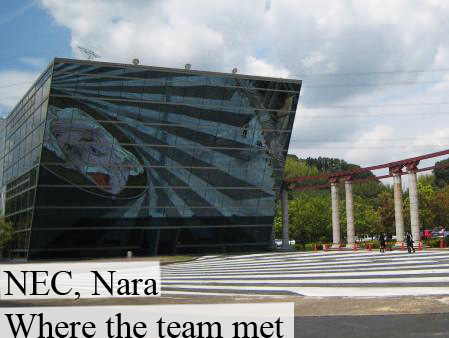
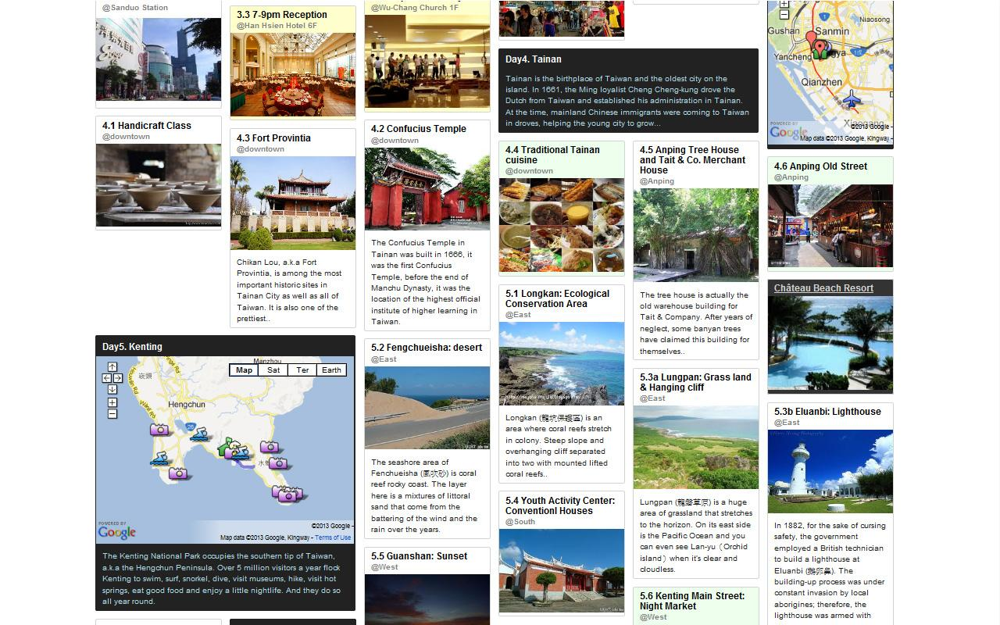

DodoLab::

About US
In DodoLab, we are working on interactive websites and (mobile) web applications; for instance, applications with canvas interaction and using location-based API.
We embrace new frameworks and technology(ex. CSS3, HTML5, YUI, Node.js etc), as well as learning and applying new design concepts (ex. responsive web design, dynamic layout etc). In the meanwhile, we pay attention to the stability and quailty of our works.
The most important of all, we care a lot about how you and the users feel :]
Team Members
Chia-Jung (Apple) Chan Fardel
Studies: Entertainment Technology Center, Carnegie Mellon University (CMU)
Expertise: Data Visualization, User Interface and Interactive Design
Skills: Photoshop; CSS3/HTML5, JavaScript; C#, Java, Pyhon, R


Demo::
Here are some web projects that we have done together and/or individually：
A Quest Builder
Mobile Web Application
The quest builder is a location-based mobile web application which allows learners to create and play themed quests whenever and wherever they are. This application uses Geolocation and File API from mobile phones, and adopt the flexibility from a web application to facilitate our deliverable.
Ruby on Rails (RoR)
The prototype was built on ROR. It was a student project accomplised in a month period.
mobilequest.heroku.com
Interactive Card
HTML5
This interactive thanks card was implemented by HTML5 Canvas. When you first visit this card, your will see a tutorial in the beginning to help you learn the tips of how to play with it. After that, as a guest, you can chose the photos u like for printing later on.
YUI3
The application was created by YUI3 framework in order to take advantages of a better structure and future usage.
lazybean.github.com/thxcardMisc:
During weekend, except walking with the dogs and ski, we also tries some small testing applications for fun and to learn more about new web frameworks. For examples:
Local Storage

A simple todo list to test the localstorage of HTML5. The interface, in particular, was design to avoid noise information. The tips will show up when mouse over on a corresponding element; and the list will be saved in the local storage for later review.
c9.io/pomme15/2dolistYUI APP Framework
This dive table is used for scuba diving. It calculates how much time a diver can stay under water for each dive. The purpose of this app is to test YUI3 APP Framework.
lazybean.github.com/scubadooOfficial Website of a Jazz Band
CSS3/HTML5
This is a website for a improve jass band. It hosts some new song records and upcoming news of the band. The muisc player was done by Audio tag in HTML5. When the song changes, the photo in the album switchs to the next. In order to facilitate Responsive Web Design, we applied Media Query of CSS3. Thus, the page can adaptes the layout based on the screen size of each device (PC, pad, mobile) a user uses, which makes reading more relaxing.
Node.js and MongoDB
The website leverages MongoDB and Node.js environment. It also provide backend for updating coming up events。Note that in the very first version, the updating mechanisim was using Facebook API. However, after communicated with our clients, it ends up to be a simple customized page.
swingmaniak.chFun Taiwan!
This is our new work-in-progress project. The goal is to study the interaction between map markers and their detail information. Despite of the references for traveling routes, it also combines Geolocation API for users to search some interesting places near them.
For the layout, I'm using a widget in YUI Gallery to achieve a dynamic grid layout like the one on Pinterest.
To Be Conti...